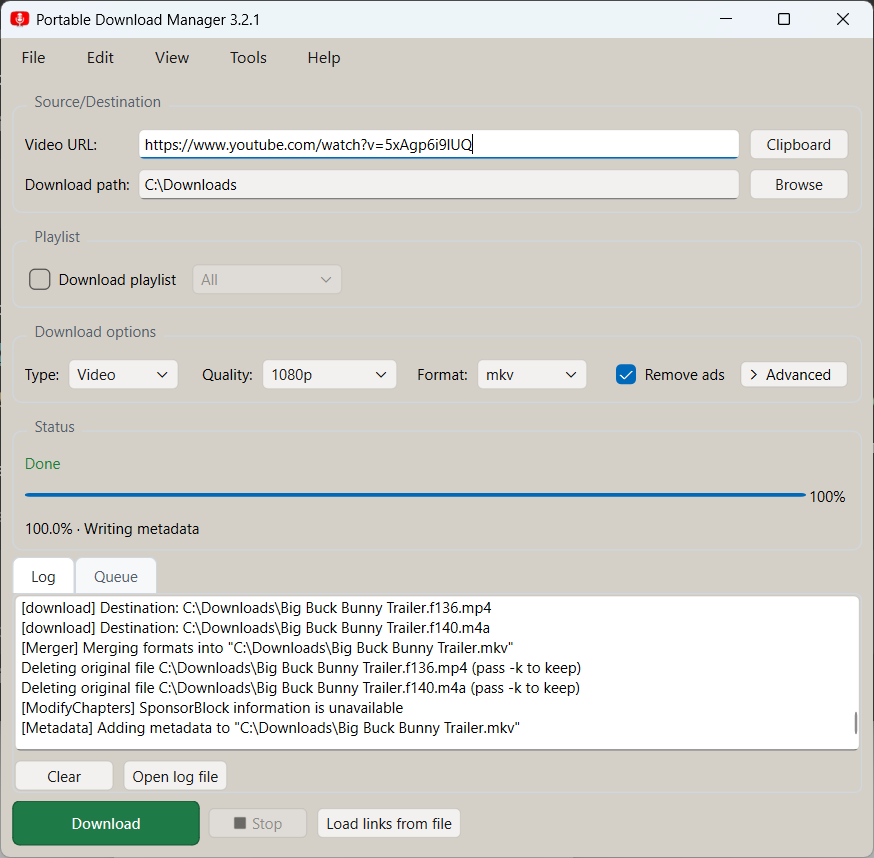

Sites supported by yt-dlp
YouTube, VK, OK, Twitter/X, TikTok, Instagram, Dailymotion, Reddit and thousands more — full coverage inherited from yt-dlp.

No installation, just one file: run it, paste a link, get the file.
Everything you need to download video and audio — and nothing extra.
YouTube, VK, OK, Twitter/X, TikTok, Instagram, Dailymotion, Reddit and thousands more — full coverage inherited from yt-dlp.
Save full videos or extract the sound as MP3/M4A.
Pick a quality preset and set a specific format.
Download a whole playlist, only the first or last item, a range or selected items.
Set your own template, e.g. %(title)s [%(id)s].%(ext)s, and keep files the way you want.
Sponsor segments are cut out of the video via SponsorBlock — enabled by default, one checkbox to turn off.
Pass any yt-dlp flags manually if you need non-standard behaviour.
Import a .txt list of links — the app downloads them one by one in a single run.
No installation required — the app runs as a single file.
yt-dlp-gui-portable-vX.X.X.exe from the releases page.C:\Downloads\..exe.Four steps — and the file is on your disk.
Copy the address of the page with the video and paste it into the Source field.
Type (video/audio), quality, format, filename template and extra arguments.
Press "Download" — progress updates in real time.
The finished file lands in the Downloads folder or wherever you pointed it.
The project is free and open source. If you find it useful, you can support it with a donation.
Support YooMoney Report an issueScan the QR code